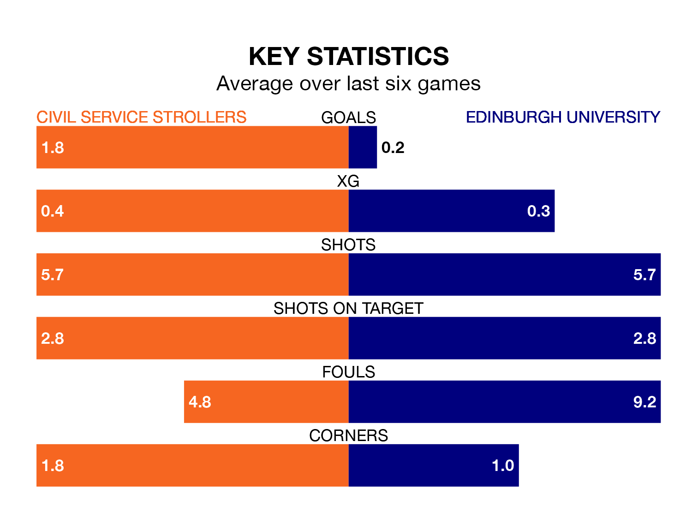

Edinburgh University make the journey to Civil Service Sports Ground to play Civil Service Strollers on Saturday looking to pick up points to end their eight-game losing streak.
Edinburgh University's struggles have left them with no points from their last six Lowland Football League matches, while their opponents have earned 10 from a possible 18.
Edinburgh University are bottom of the table after 22 games, of which they have won one and drawn one, earning four points.
Civil Service Strollers are 12 places ahead of the away team in sixth, with 11 wins and four draws putting them on 37 points.
In the last 10 years, Civil Service Strollers and Edinburgh University have played each other on 12 occasions. Civil Service Strollers won nine of them and they drew three times.
On average, Civil Service Strollers scored 2.1 goals and Edinburgh University 0.6 in those matches.
Their last meeting was on July 22, when Civil Service Strollers won 2-0 away.
With 12 goals in 22 games so far this season, Edinburgh University are the league's lowest scorers with 0.5 goals per game. And they are conceding more than average, letting in 92 goals at a rate of 4.2 per game.
The hosts are also below average scorers, with 1.5 goals per game, compared to a league average of 1.7. They have conceded 1.1 goals per game.
Civil Service Strollers's last match was on January 13, a 1-0 loss against Berwick Rangers.
Edinburgh University lost 3-0 against Celtic B last time out, also on January 13.
Updated: 14:53 (UTC), 16/01/24